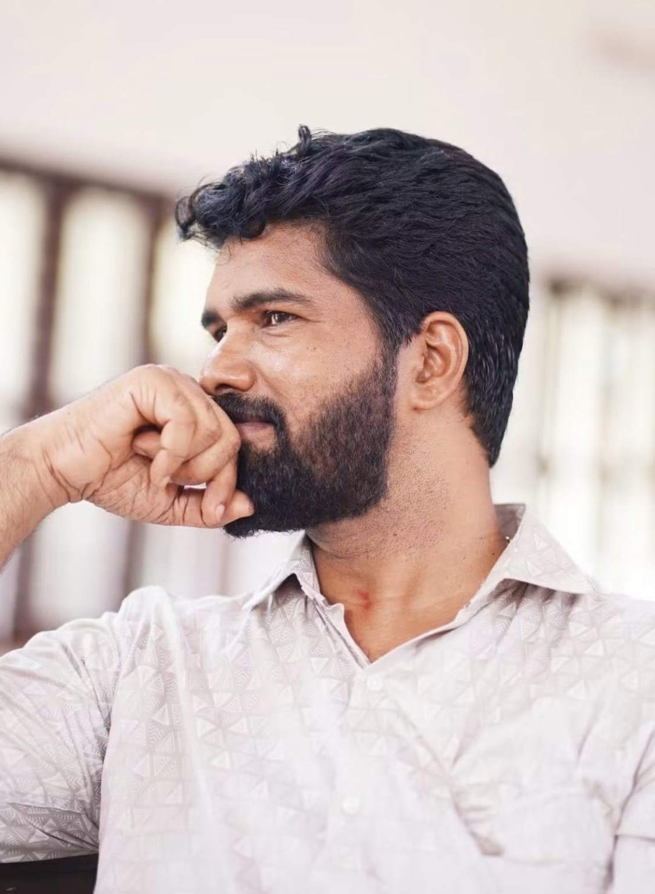

A LIFE
SHAPED BY
ART.
For more than three decades, Biju Mohan has devoted his creative life to painting, sculpture and the pursuit of meaningful artistic expression.
Discover the Artist
Where imagination becomes form.
Biju Mohan began his artistic journey in his early teens. What started as a passion for drawing and creating gradually became a lifelong dedication spanning approximately 35 years. His practice today embraces painting, sculpture and other forms of visual art, with a focus on craftsmanship, expression and individuality.
An artist shaped by decades of practice.
Biju Mohan is a dedicated artist and sculptor whose relationship with art began when he was around twelve years old. Over the past three and a half decades, he has continued to develop his skills through sustained practice, experimentation and a deep commitment to the creative process.
His artistic work extends across painting and sculpture, alongside other creative disciplines. Each work reflects a combination of observation, imagination and hands-on craftsmanship. Through years of creating, exhibiting and receiving recognition, he has built an artistic journey marked by persistence and a continuing desire to explore new ideas.
Today, painting and sculpture remain at the heart of his practice. This website presents a selection of his work and offers a place to discover his artistic journey, achievements and future creations.
Painting. Sculpture. Expression.
Artwork images, sculpture collections, awards and exhibition history will be added here as the portfolio materials are collected.
“A lifelong journey of turning ideas, observation and imagination into works of art.”
Discover the work.
For artwork enquiries, exhibitions, commissions and collaborations, contact Biju Mohan.